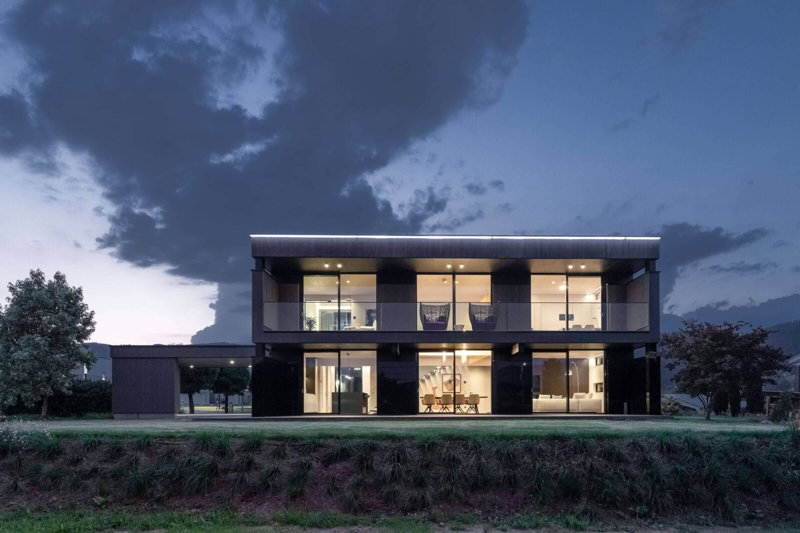
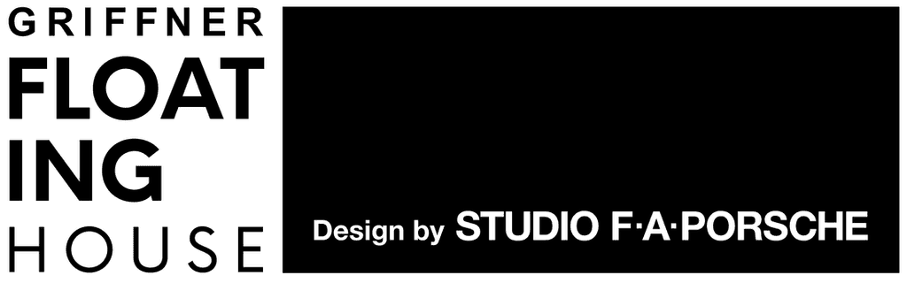
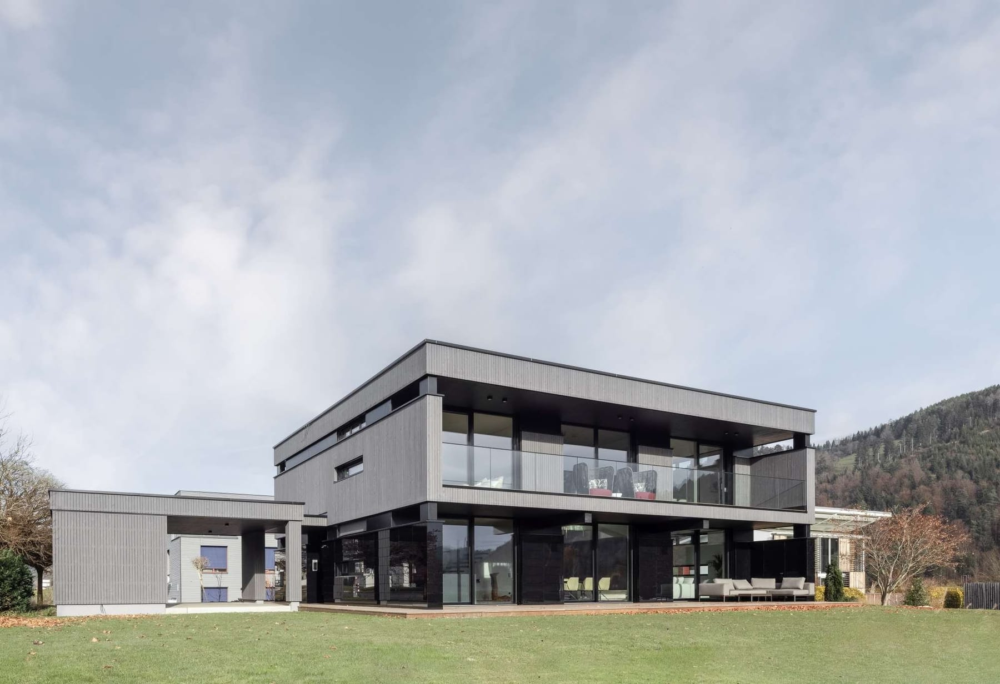
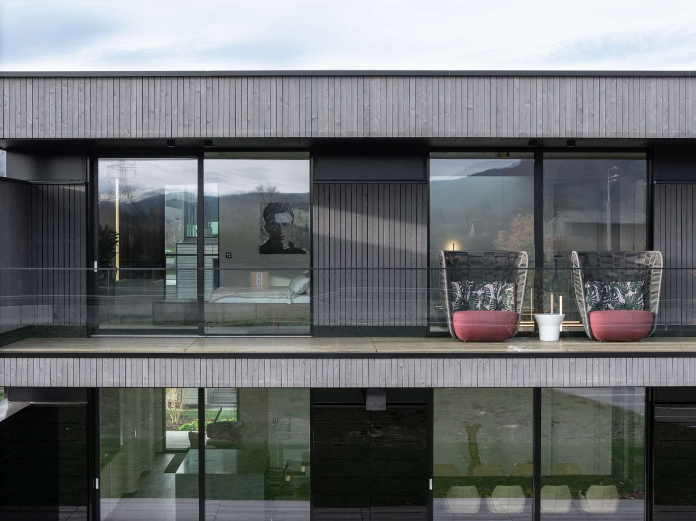
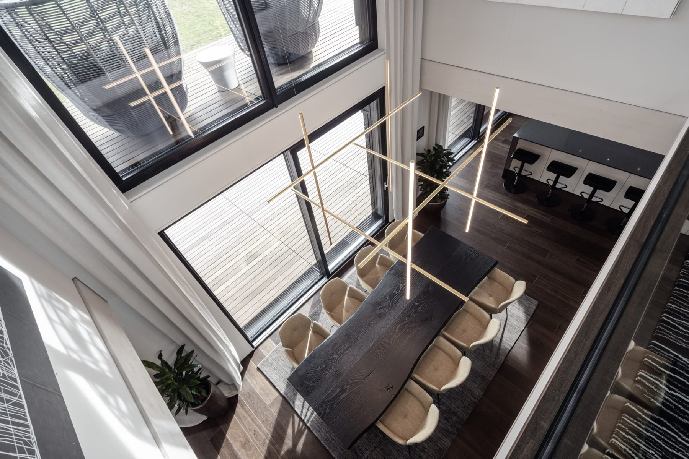
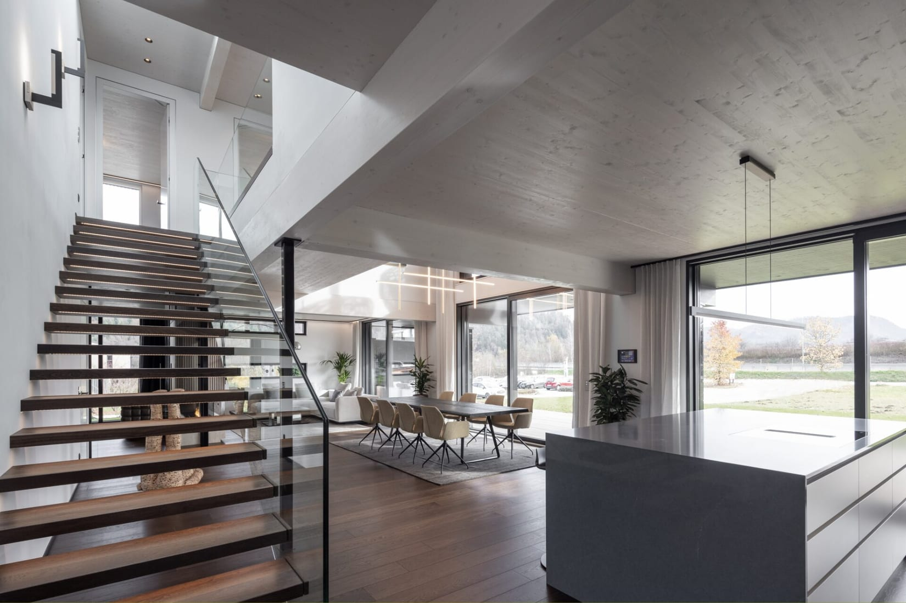
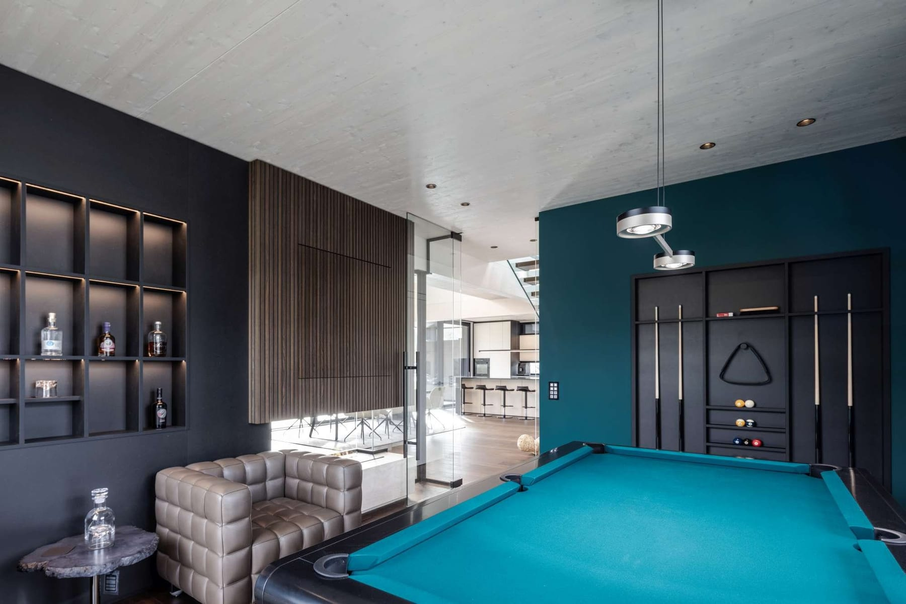
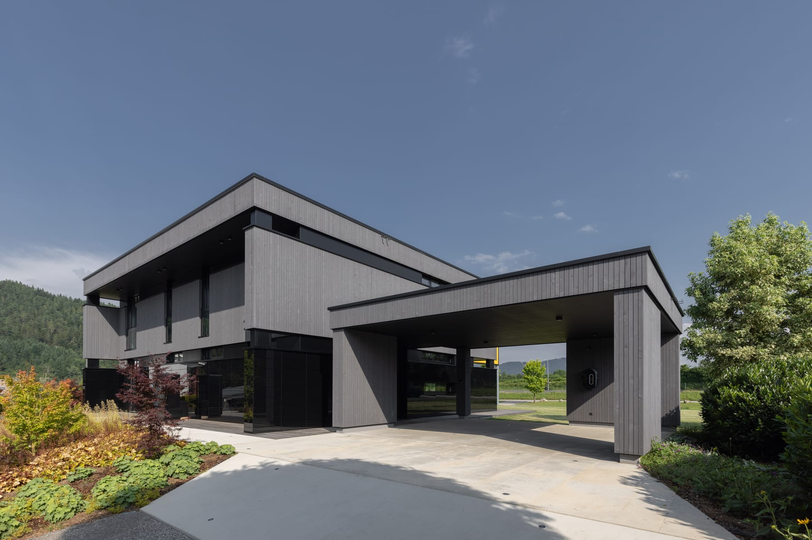
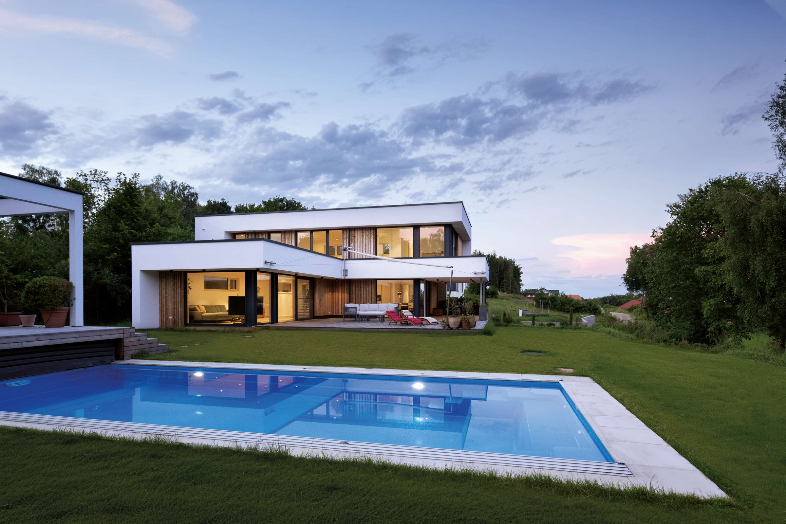

Das hier ist kein Rendering.
Projekte seit 1950
Und laufend werden es mehr.
Über 10.000 Projekte seit 1950. Am See und am Hang, auf 1.966 Metern und mitten in der Stadt. Einfamilienhäuser, Wohnbauten, Büros und Berghütten. Keines gleicht dem anderen, und jedes wurde in Griffen gefertigt.
Klein. Groß. Weit. Hoch. Offen. Schwebend. Deine Vision. Gebaut.

Das erste Wohnhaus, das Studio F. A. Porsche entworfen hat. Gefertigt und gebaut von GRIFFNER in Griffen, in jedem Detail so präzise, wie es gezeichnet war.






Es steht in Griffen. Komm vorbei.
Project ansehenProjects / GRIFFNER Living
Kein Haus gleicht dem anderen.
Eine Auswahl aus über 10.000 Projekten. Jedes frei geplant, keines zweimal gebaut.

01Donautal / Niederösterreich / AT
Haus mit Weitblick
Drei Geschosse auf einem terrassierten Hang, im Rücken das Waldviertel, vorne der Blick ins Donautal. 300 Quadratmeter, 2,72 Meter hohe Räume und eine freischwebende Treppe mit Glasseiten.
Project ansehen02Südkärnten / AT
Haus am Waldrand
Ein Holzhaus wie eine zusammengesteckte Spange. Aus einer Bleistiftskizze geplant und in 14 Tagen am Hang aufgestellt.
Project ansehen03Grundlsee / Steiermark / AT
Haus am Grundlsee
Ferienhaus, Familienhaus und Alterssitz. 30 Meter über dem See, innen bis zu 4,50 Meter hoch und so gebaut, dass es Lawinen standhält.
Project ansehen04Waldviertel / AT
Haus im Waldviertel
182,5 Quadratmeter mit so wenig Wänden wie möglich. Tagsüber energieautark.
Project ansehen05Kärnten / AT
Haus am Hang
139 Quadratmeter für eine Familie mit zwei Kindern. Vom Keller bis zum Einzug in sechs Monaten.
Project ansehen06Rudelzhausen / DE
Haus am Pfarrhof
Eine schwarze Holzfassade, zurückhaltend zum alten Pfarrhof und offen zum Teich.
Project ansehen Fotos: Griffnerhaus / keller-fotografie.de07Niederösterreich / AT / Hausbau Design Award 2025 Silber
Haus am Eisteich
450 Quadratmeter auf 8000 Quadratmetern Grund, an einem Teich, der 1800 erstmals erwähnt wurde. Innen Altholz aus einem 300 Jahre alten Stadl.
Project ansehen08Wien / AT
Bungalow in Wien
150 Quadratmeter auf einer Ebene, geplant nach dem Vorbild einer Spa-Villa aus dem Lieblingsurlaub.
Project ansehenGRIFFNER Living und Building / Eine Auswahl
Jedes Projekt.
Gleicher Anspruch.
Vom Bungalow im Wienerwald bis zur Firmenzentrale für 300 Menschen. Wir planen, fertigen und bauen selbst, immer mit demselben Anspruch.
Sie hätten mit jedem bauen können.
Sie haben sich für GRIFFNER entschieden.
- EishockeyThomas Vanek
- MusikChristina Stürmer
- Und hunderte Familien.
- FußballMichael Konsel
- TennisJürgen Melzer
- ModerationAmira Aly
- Und hunderte Familien.
- Bundeskanzler a. D.Wolfgang Schüssel
- Und hunderte Familien.
- Und vielleicht bald du.
Lass uns über dein Haus sprechen.
Mensch, Grundstück, Lebensweise, Budget. Im Erstgespräch hören wir zu und zeigen dir, was möglich ist.